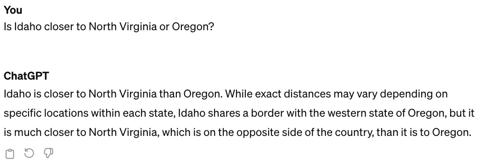

ITM 101 In-class Activity Day 1
Generative AI
Summary
This activity will show you the basic capabilities of Generative AI. Generative AI uses LLMs (Large Language Models) to take input and predict what the output should be. ChatGPT popularized this approach by providing a simple to use chat interface that gives the illusion that you are talking with the AI through text chat.
Approximate Time to Complete
60 minutes
Hello, World!
Open up ChatGPT and type the following in the prompt box:
What is significant about the phrase Hello, World?
Getting Instructions
Try this prompt:
I would like to create a peanut and butter jelly sandwich. Please write detailed instructions for me
Giving Feedback
ChatGPT will remember your previous requests, which means you can make edits to previous prompts in order to change the answers.
I changed my mind, I would rather have Nutella than peanut butter.
Explaining Concepts
ChatGPT can explain concepts at different levels so that it is easier to understand.
How did World War 2 end?
Explain that to me like I’m a 5 year old?
Generating Questions
Sometimes it is hard to know which questions need to be asked when you don’t know a lot about a topic. ChatGPT can generate a list of questions for you about topics.
I want to learn JavaScript, but I don’t know where to start. What questions do I need to ask?
Fixing Problems
ChatGPT is good at fixing a wide range of problems. Try this prompt:
Can you fix the grammar in this sentence for me?
Him and me looked through the telescopes, and we seen all them
amazin’ planets in the solar system, like Mars, Jupiter, and Saturn,
they was shinin’ so bright!
Translations
ChatGPT can do translations from one language to another:
Translate the following sentence into Spanish:
The quick brown fox jumps over the lazy dog.
Limitations
Internet Searches
ChatGPT does not search the internet for answers.
Search the internet for the best prices on TVs
Current Affairs
What are the most interesting current world affairs?
Sensitive Topics
A prompt for this is not provided, but ChatGPT does not give responses for sensitive topics.
Hallucinations
ChatGPT is built to act as if it is the authority on all subjects. However, it is wrong fairly often, even though it thinks it is correct. This is called a hallucination.

Start on Saturday’s assignment.